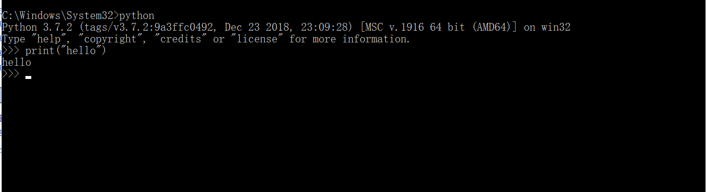
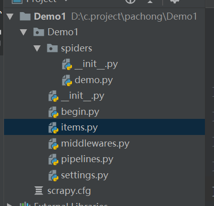

1 python环境的配置
1.1 安装python文件包，放到可以找到的位置
1.2 右键计算机->属性->高级环境设置->系统变量->Path->编辑->复制python路径位置
1.3 管理员身份打开cmd,输入python，测试环境是否安装成功

2 安装pycharm
2.1 安装pycharm文件包，放到可以找到的位置
2.2 新建文件夹，需要设置环境
2.3 File->Setting->project ...->add->找到python.exe
2.4 爬虫需要的安装包
2.4.1 打开cmd(管理员身份)
2.4.2 python -m pip install requests
2.4.3 python -m pip install lxml
2.4.4 python -m pip install bs4
2.5爬取数据
2.5.1 打开cmd 输入scrapy startproject Demo(可以先进入存放文件的目录)
2.5.2 打开pycharm打开文件Demo,新建python文件
2.5.3 新建python文件begin.py输入以下命令，运行begin可以实现爬取数据
from scrapy import cmdline
cmdline.execute("scrapy crawl uestc".split())
2.5.4 打开settings.py设置输出文件格式和文件位置以及User_agent
FEED_URI = u'file:///C:/scrapy/test.csv'//输出目录
FEED_FORMAT='CSV'
FEED_EXPORT_ENCODING="gb18030"
3 以下为部分图片
